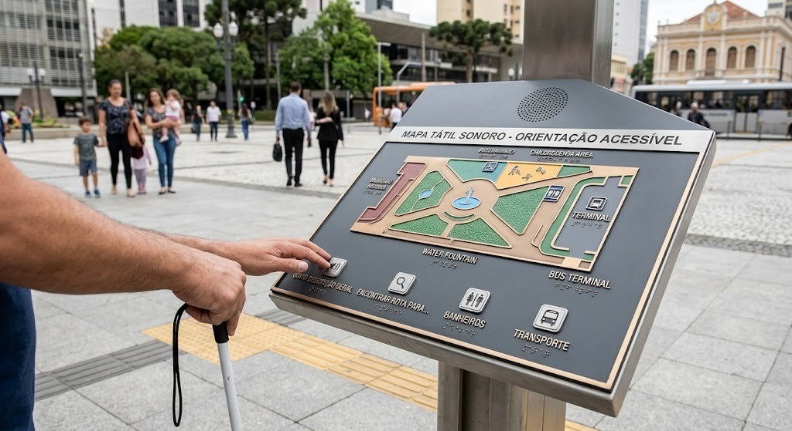

01. Mapa Tátil Sonoro
Projete o mapa tátil sonoro posicionado estrategicamente fora da rota de circulação principal, evitando obstruções.
Conforme a NBR 9050, garanta que o plano inclinado esteja entre 0,90 m e 1,20 m do piso acabado com alcance visual e manual acessíveis.
Segundo a NBR 16537, utilize piso tátil de alerta ao redor do totem para indicar a presença de um obstáculo suspenso ou ponto de interesse.
Disponibilize textos em Braille, alto-relevo e contraste cromático. Complemente com sinalização sonora clara por botão acessível.